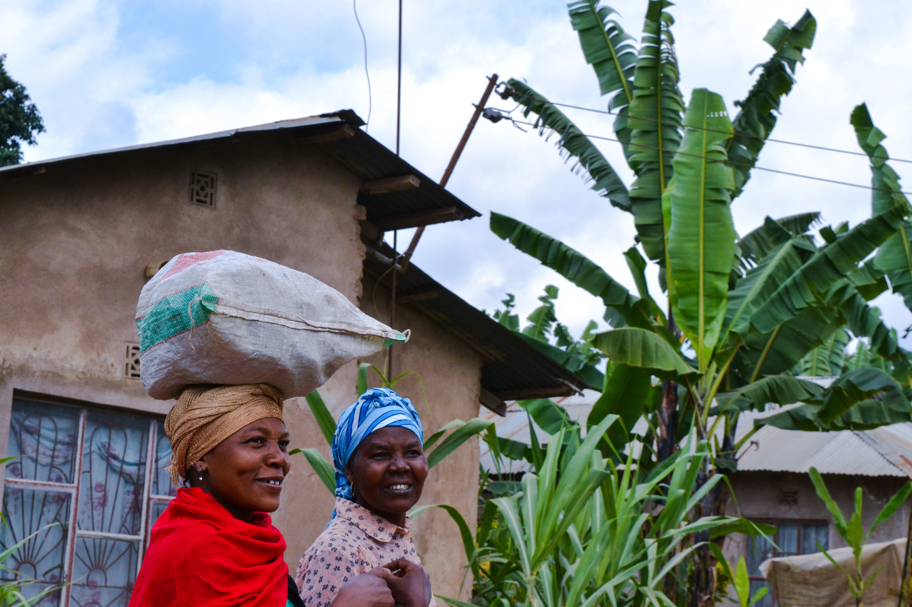
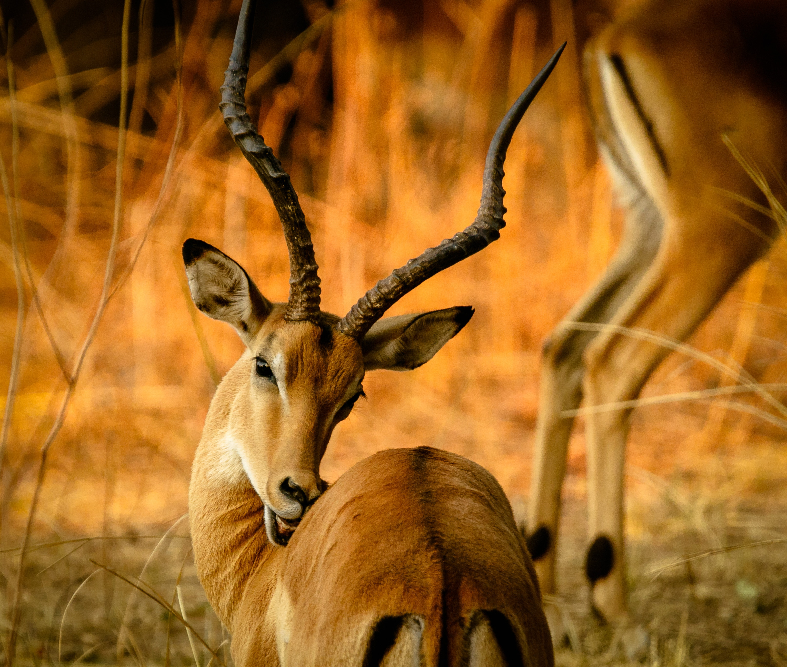

Çok sayıda paleoantropolog, Afrika'nın dünyadaki en eski yerleşim bölgesi olduğunu savunuyor. Milyonlarca yıl öncesine ait fosil ve insan kalıntılarından yola çıkarak bu görüşü savunan bilim insanlarına göre ilk insan türleri, Afrika'dan dünyanın diğer bölgelerine göç ediyor ve böylece diğer kıtalarda da insan yaşamı başlıyor.


Afrika'da hastalıklara, ölümlere, maddi kayıplara ve daha birçok olumsuz şeye neden olduğuna inanılan nazardan korunmak için birtakım tedbirlere de başvuruluyor. Örneğin evlerin kapılarına, kıyafetlere, hatta eşyalara nazar boncuğu takmak veya Hz. Fatma'nın elini sembolize eden objeler asmak, kıta genelinde yaygın olarak başvurulan geleneksel tedbirlerden.
KEŞFET

